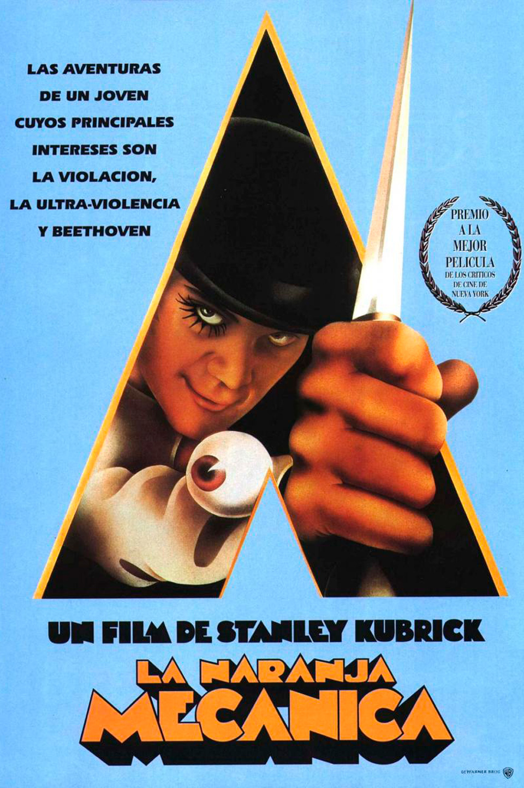
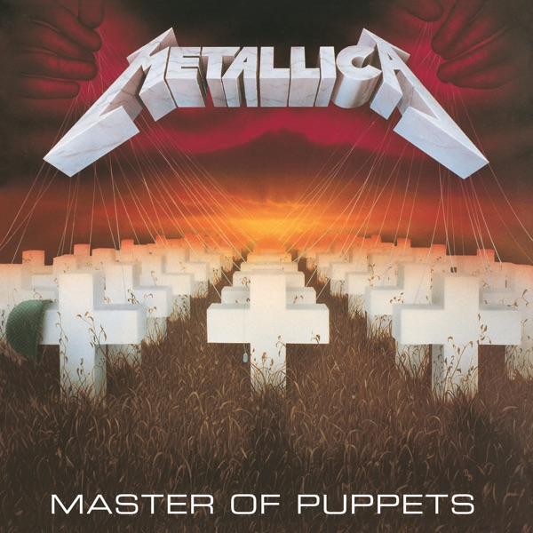
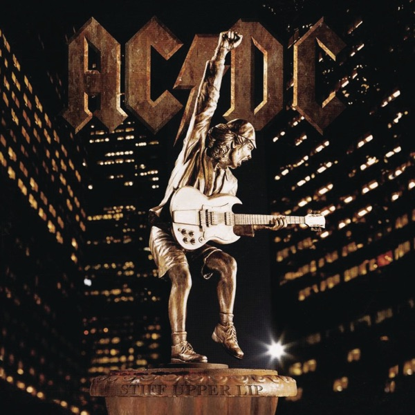
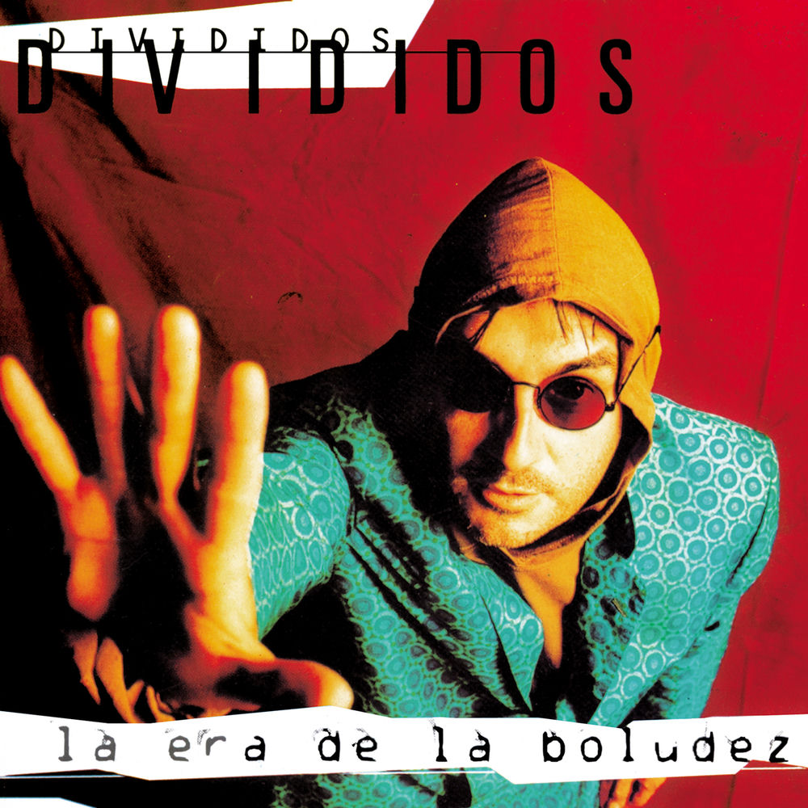

PERFIL 03
Ignacio
Buenos Aires
Empecé a programar durante la pandemia buscando una vocación y ya no paré. Hoy curso el segundo año de la Tecnicatura Superior en Desarrollo de Software y trabajo como desarrollador Full Stack, construyendo sistemas WMS de gestión de depósitos con .NET, SQL Server y Angular.
Cuando algo falla busco el origen del problema y me incomoda la complejidad innecesaria: un buen código es el que le facilita las cosas a quien lo lee después. Al equipo le aporto experiencia real con datos, circuitos administrativos y APIs, y orden para llegar al final. Fuera de la pantalla, juego y miro fútbol.
Habilidades
- HTML
- CSS
- JavaScript
- TypeScript
- Angular
- C#
- .NET
- SQL
- Trabajo en equipo
Películas favoritas


Discos favoritos

Led Zeppelin — Led Zeppelin IV (1971)

Metallica — Master of Puppets (1986)

Pappo’s Blues — Volumen 1 (1971)

AC/DC — Stiff Upper Lip (2000)

Divididos — La Era de la Boludez (1993)

Sumo — Llegando los monos (1986)
Tu próximo desafío aparecerá acá.